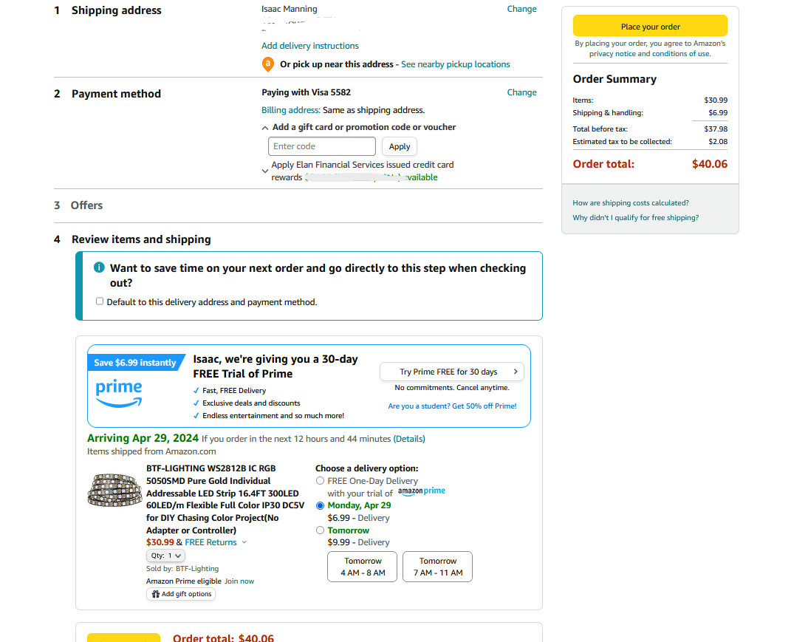
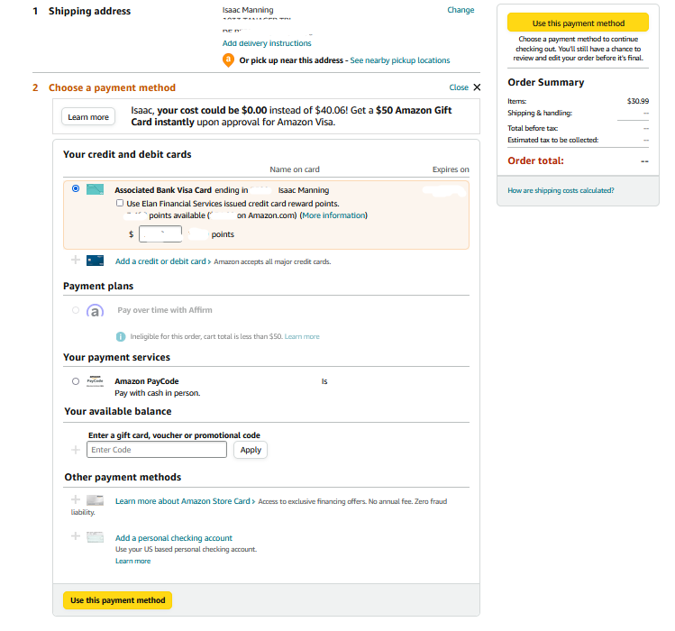

Pictures of the webpages because they can look different for everyone.
Main Page:
Secondary Page:


Validation
Home page (Place order page)
The home page did not pass the validation
Warnings: 13
Errors: 8
info statements: 19
Secondary page (Select payment type)
The secondary page did not pass the validation
Warnings: 13
Errors: 8
info statements: 19
Site design
Main page: (Place order page)
Rateing: 9.6 out of 10
I gave the main page a rateing of 9.6 out of 10 because it is a really good website and it does what it needs.
but one thing that I think when I use this part of the webstie is that it can be a little busy and a little hard to understand sometimes.
but it is really good.
Secondary page: (Select payment type)
Rateing: 9.6 out of 10
I gave the secondary page a reateing of 9.6 out of 10 because it is a really good website and it does what it needs.
It can sometimes be a litle overwelming when you have a credit card added with point rewards,
it can be hard to see if you are using them or not on amazon. But it isin't a crazy big deal.
But other than that it is really good.
Meet purpose
Amazon is a really good websteite and is used a lot everyday.
As long as it works and does what the user expects it is fine.
I would say that the two pages do exactly what they need to so and it is fine.
Page(s) don't need to pass the validation to be a good webpage.